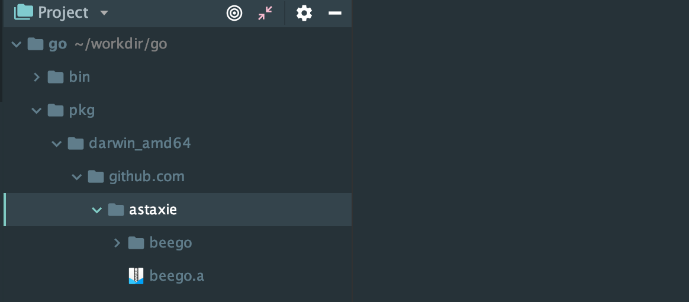
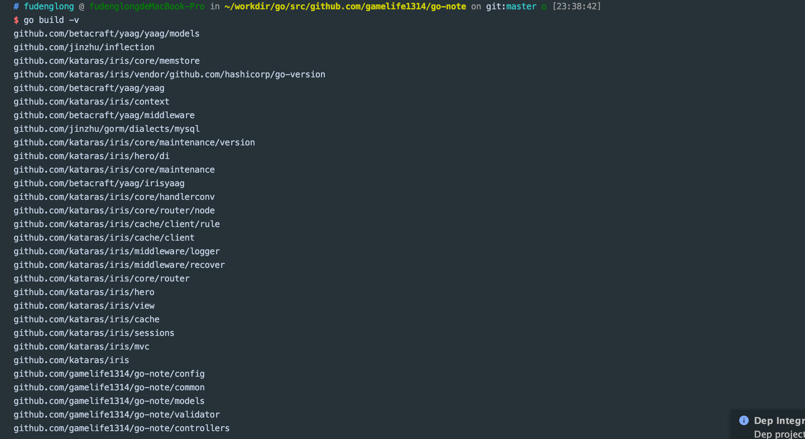

GO 环境变量
GOPATH: 是可以指定多个目录的，里面的每一个目录都代表一个工作区，例如我的是：/Users/fudenglong/workdir/go；GOROOT: GO 的安装目录，例如：/usr/local/Cellar/go/1.10.2/libexec；GOBIN: GO 程序安装或构建命令源码文件时生成的可执行程序存放位置，如果没有设置，那么是第一个工作区的bin目录下面；
Go 语言包的组织形式
Go 语言的源代码是以代码包为组织单位的，在文件系统中，这些代码包其实与目录是一一对应的，目录可以有组目录，所以代码包也可以由子包，例如你可以使用命令 tree -d $GOPATH/src/golang.org 查看 golang.org 下面的子包；
一个代码包中可以包含任意的以.go为扩展名的源码文件，这些源码文件有个要求，它们需要被声明属于同一个代码包。代码包的名称一般会与源码文件所在的目录名称同名，如果不同名，则在实际构建，安装过程中以代码包名称为准。
每个包都会有导入路径，如果我们在构建程序的时候需要引用其他程序，那么我们首先引入它，例如：
1 | import "github.com/labstack/echo |
在工作区中，一个代码包的实际导入路径就是从src子目录到该包实际存储位置的相对路径。一般来说，Go语言的源码文件都需要被存放在环境变量GOPATH中某个工作区src子目录下的某个目录中。
源码文件分类
源码文件分为三种，即：命令源码文件， 库源码文件，测试源码文件，他们都有着不同的用途及编写规则；
命令源码文件
命令源码文件 是程序的运行入口，是每个可独立运行程序必须拥有的。我们可以通过构建(build)与安装(install) 生成与其对应的可执行文件，后者一般与命令源码文件的直接父目录同名，命令源码文件也可以通过 go run 命令直接启动；如果一个源码文件属于main包，并且包含一个无参数声明无结果声明的main函数，那么就是命令源码文件，like this：
1 | package main |
要记住的是，对于一个独立的应用程序来说，命令源码文件只能有一个，如果有与命令源码文件同包的文件，那么他们也应该属于main包。
库源码文件
库源码文件 不能直接运行，仅用于存放应用程序实体，只要遵从语言规范，这些程序实体就可以被其他代码使用，这些 其他代码 可以与被使用的程序实体在同一个源文件内，也可以在其他源码文件，甚至其他代码包中。
包声明规则
同目录下的源码文件的代码包声明语句要一致，也就是说，他们属于同一个代码包，这对所有源码文件适用；如果目录中有命令源码文件，那么其他种类的源码文件也应该声明属于
main包。源码文件声明的代码包的名称可以与其所在目录的名称不同，但在对代码包进行构建的时候，生成的结果文件的主名称与其父目录名称一致；对于命令源码文件而言，构建生成的可执行文件的主名称与其父目录名称相同。
包名与目录名不一致的时候，如何导入该包并使用其中的程序实体
例如，我有个目录fib, 我在里面定义了一个源码文件 fib.go, 但是我却声明它属于 fib1 包，如下：
1 | package fib1 |
那么我在 main.go 中对它的引用应该是这样的：
1 | package main |
规则是这样的：源码文件所在的相对于src目录就是它的代码导入路径，而实际使用程序实体时给定的限定符要与它声明所属的代码包名称对应；
GO 代码访问权限
Go 程序实体名称的首字母是否大写决定了它是否可以被当前包以外的代码包访问；通过名称，Go语言吧程序实体的访问权限划分为了包级私有和公开的；
可以通过创建
internal包让一些程序实体仅仅能被当前模块中的其他代码引用，这称作模块级私有。具体规则是，internal代码包中声明的公开程序实体仅能被该代码包的直接父包及其子包中代码引用，当然引用前需要导入这个internal包，对于其他导入该包，都无法通过编译。
go install 命令了解一波
GO 源码安装后通常会放在工作区的src子目录下，如果在安装后产生了归档文件就会放进工作区的pkg子目录，如果产生了可执行文件就会放进工作区的bin目录。
源码是以代码包的形式组织起来的，一个代码包其实就是对应一个目录，安装某个代码包而产生的归档文件是与这个代码代码包同名的。放置它的相对目录就是该代码包导入路径的直接父级。例如，beego 的导入路径是：
1 | import github.com/astaxie/beego |
那么执行命令
1 | go install github.com/astaxie/beego |
生成的归档文件就是：$GOPATH/src/pkg/{平台目录}/github.com/astaxie/beego.a，这里有个平台目录代表目标系统类型，例如：

go build vs go install
构建使用的命令使 go build，安装使用的命令使：go install，build 和 install 的时候都会执行编译，打包操作，并且这些操作生成的任何文件都会先被保存到某个临时目录中。
如果 build 的是库源码文件（不属于main包），构建的结果只会存在与临时目录中，这里构建的意义就在于检查和验证；
如果 build 的是命令源码文件（属于 main 包，有main()入口函数），那么构建的结果将会被存放到源码文件所在的目录；
但是 install 的时候会先执行 build 操作，然后还会进行链接操作，并且把结果文件存储到指定目录。进一步说，如果安装的是库源码文件，那么结果就会被存储到 pkg 目录下的某个子目录，如果安装的是 命令源码文件，那么结果就会被存储到工作区的 bin 目录中，或者环境变量 GOBIN 指向的目录中。
详细说说 go build 的选项及其意义
运行 go build 命令的时候，默认不会编译目标代码所依赖的那些代码包。当然如果被依赖的代码包的归档文件不存在或者发生改动，那它还是会被编译，你可以使用 -v 参数查看构建过程中编译了哪些包，如下所示：

-v: 查看构建过程中编译的代码包的名称，如上图所示；-a: 强制编译程序依赖的代码包；-x: 查看build具体执行了哪些操作, 如果加上-n那么只显示要执行哪些操作但不会具体执行；
go get 命令常用于源码安装
go get 命令会自动从以下主流公用代码仓库，比如 github 下载目标代码并且把他们安装到环境GOPATH包含的第一个工作区的相应目录中，如果存在环境变量BOBIN，那么仅包含命令与那吗文件的代码包会被安装到BOGIN指向的那个目录，最常用的几个参数如下：
-u: 下载并更新代码包以及它的依赖-d: 只下载不安装；-fix: 在下载代码包后先运行一个用于根据当前 Go 语言版本修正代码的工具，然后再安装代码包；-t: 同时下载测试所需的代码包-insecure: 允许通过非安全的协议下载和安装代码包，HTTP就是如此。